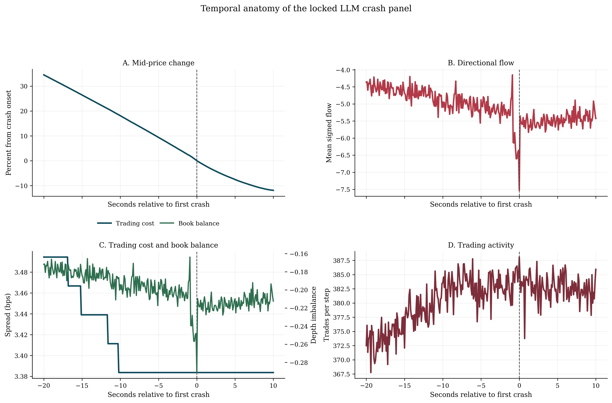
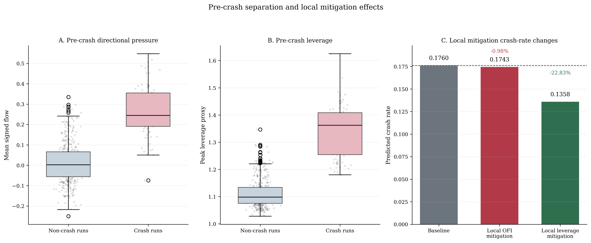

Behavioral Prior Elicitation via LLM for Heterogeneous-Agent Bitcoin Flash-Crash Simulation
A four-stage pipeline that anchors LLM-elicited behavioral priors to empirical microstructure,
instantiates them in a heterogeneous limit order book simulator, and applies causal discovery
with counterfactual analysis to study Bitcoin flash-crash amplification mechanisms.
National Economics University, Hanoi, Vietnam
✉ nghiant@neu.edu.vn
66
Flash-Crash Events
0.176
LLM Crash Rate
22×
vs Uniform Priors
−23%
Leverage Mitigation
Abstract
Overview
Abstract
Bitcoin perpetual futures trade continuously with shallow liquidity and high price impact,
making them prone to millisecond-scale flash crashes. Agent-based limit order book simulators
are a natural tool for studying such events, but their behavioral parameters are usually
hand-crafted or require full order book histories that are rarely available at scale. We propose
a four-stage pipeline that constructs a reproducible 100 ms BTCUSDT flash-crash
event panel from 66 detected events, elicits behavioral priors for four agent archetypes using
an offline large language model conditioned on empirical microstructure anchors, instantiates a
heterogeneous limit order book simulator with the validated priors, and applies causal discovery
plus counterfactual analysis to the resulting synthetic panel. Across 500 simulation runs,
LLM-elicited priors produce a crash rate of 0.176 versus 0.008 under
uninformative uniform priors and generate heavier return tails. In the frozen counterfactual
analysis, reducing leverage amplification by one within-sample standard deviation lowers the
predicted crash rate from 0.176 to 0.136, whereas reducing directional pressure yields only a
marginal change.
Bitcoin Flash CrashAgent-Based SimulationLarge Language ModelCausal InferenceLimit Order BookBehavioral Prior ElicitationCounterfactual AnalysisMarket Microstructure
1
66-Event BTCUSDT Panel: A reproducible 100 ms flash-crash event corpus spanning
June 2020 to December 2024, paired with phase-level microstructure features covering price dynamics,
order flow, liquidity, and toxicity proxies.
2
Constrained LLM Elicitation Pipeline: Structured prompts conditioned on empirical
microstructure anchors, with bounded-support, variance, and cross-archetype sanity gates before any
prior enters the simulator.
3
Heterogeneous LOB Simulator: A four-archetype (momentum, noise, market maker,
contrarian) simulator parameterised entirely from validated LLM-elicited priors rather than
hand-crafted assumptions.
4
Causal & Counterfactual Analysis: DAGMA and DirectLiNGAM applied to the
run-level synthetic panel for mechanism verification, with support-preserving counterfactual
interventions on leverage and directional pressure.
Motivation
Why Bitcoin Flash Crashes Are Hard to Simulate
Bitcoin perpetual futures occupy a structurally distinct position in modern financial markets.
They trade continuously, carry no expiry date, support persistent leveraged positions, and exhibit
order book dynamics unlike any equity or dated-futures venue. The result: concentrated liquidity
near the best quotes, shallow depth beyond the top levels, and elevated price impact — all of which
make these markets especially vulnerable to millisecond-scale flash crashes.
⚡
The calibration gap: Agent-based limit order book simulators are the natural
tool for studying flash crashes, but their behavioral parameters are either hand-crafted
(lacking market-specific grounding for crypto) or require sub-second Level-2 order book
histories that are rarely available at scale.
🤖
The LLM opportunity — with a catch: Large language models can elicit behaviorally
plausible parameter priors from structured prompts, but without empirical discipline their outputs
may be narratively reasonable yet quantitatively wrong, failing to reproduce the microstructure
regularities of the target market.
🔬
Our approach: Combine empirical anchoring with offline LLM elicitation.
By conditioning the LLM on phase-level microstructure summaries (OFI quantiles, Kyle's λ,
realized volatility, bid-ask spread) and enforcing sanity gates before the priors enter the
simulator, we get behavioral realism without requiring tick-level data for every run.
Methodology
Four-Stage Pipeline
Figure 1. Overall pipeline. Empirical BTCUSDT flash-crash events feed phase-level
microstructure summaries into an offline LLM (Mistral-7B). The validated priors parameterise a
heterogeneous LOB simulator, and the resulting 500-run synthetic panel is analysed with DAGMA
and DirectLiNGAM for mechanism verification and counterfactual sensitivity.
Priors frozen — no further LLM calls after fitting
③ LOB Simulation
100 agents, 4 archetypes, 500 independent runs
100 ms tick interval; Poisson agent activation
Phase-specific priors activated progressively
Kyle-style linearised price-impact rule
Market makers withdraw on volatility threshold
④ Causal Analysis
Run-level panel Z ∈ ℝ500×p
DAGMA: continuous acyclicity-constrained DAG
DirectLiNGAM: non-Gaussian directionality check
Logistic counterfactual on leverage & OFI
Support-preserving intervention (−1 std, floored at non-crash median)
Agent Archetypes
Each simulation run instantiates 100 agents drawn from four archetypes. Their behavioral parameters
are sampled from phase-conditional LLM-elicited priors, not fixed values.
📈 Momentum Traders
Trade in the direction of recent price trends. Amplify directional pressure during the drop
phase, accelerating the cascade once selling begins.
🎲 Noise Traders
Trade randomly, providing baseline order flow. Arrival rate calibrated directly from phase-level
empirical trade intensity rather than elicited from the LLM.
🏦 HFT Market Makers
Post passive limit quotes on both sides. Each draws a volatility-withdrawal threshold σ*;
once volatility exceeds it they cancel all quotes — the primary liquidity amplification channel.
🔄 Contrarian Traders
Buy against sufficiently deep drawdowns, accumulating long inventory. They are the primary
recovery driver once the drop phase exhausts selling pressure.
Flash-Crash Detection (Simulation)
A simulated run is classified as a crash if price falls ≥1.93% within a 10-step (1-second) window —
calibrated from the 10th percentile of the rolling-10-tick drawdown distribution across the
empirical 66-event panel. This threshold is distinct from the historical detector (≥3% in 5 minutes)
used to build the event corpus.
Microstructure
Temporal Anatomy of a Simulated Crash
The locked LLM panel does not generate isolated price jumps. Instead, crash events emerge through
a coordinated mechanical sequence: directional pressure turns sharply negative,
quoted trading cost rises as book balance deteriorates, trading activity accelerates, and price
then falls in a concentrated burst with only partial early recovery.

Figure 2. Temporal anatomy of the locked LLM crash panel, aligned at the first
detected crash. Price (top), directional pressure (OFI), quoted trading cost (spread), book balance,
and trading activity co-move in the expected crash sequence. This should be interpreted as correct
sequencing and co-movement — not perfect amplitude calibration against the empirical reference.
⚙️
The amplification loop: Rising volatility triggers market-maker withdrawal
(their σ* threshold is exceeded), which widens spreads and thins depth. This in turn makes
the same amount of net order flow produce larger price changes via the Kyle-style impact rule
(Eq. 7), completing the feedback loop that drives the crash.
Experiments
Three-Way Locked Comparison
The LLM condition is evaluated against two locked baselines on the same frozen 500-run panel:
a broad uniform prior (uninformative) and a literature prior
(hand-crafted values from prior simulation studies). The LLM condition is considered successful
if it dominates the broad baseline and remains non-inferior to the literature baseline on crash
incidence and mean short-horizon drawdown.
0.176
LLM Crash Rate
↑ vs 0.008 (uniform)
1.328%
Mean Drawdown
↑ vs 0.612% (uniform)
88
Crash Runs / 500
Tails 295× below empirical
Criterion
Empirical Ref.
LLM
Broad (Uniform)
Literature
Tail thickness of returns (kurtosis)
8,581.8
29.1
26.5
77.2
Volatility persistence
1.000
1.000 ✓
1.000
1.000
Directional flow, pre-crash phase
0.264
0.187
0.115
0.185
Directional flow, drop phase
−2.699
−5.039
−2.912
−2.881
Crash incidence (target: 0.05–0.40)
0.05–0.40
0.176 ✓
0.008 ✗
0.152
Mean short-horizon drawdown (%)
—
1.328
0.612
1.128
The LLM condition clearly improves over the broad-prior baseline on crash incidence and mean
drawdown, and remains competitive with the literature baseline. It does not reproduce the full
tail magnitude of the crash-conditioned BTC reference panel (a 295× kurtosis gap), nor does it
perfectly match drop-phase directional flow — both expected limitations of a linear price-impact
rule with static within-run sampling. The appropriate read is competitiveness, not
uniform superiority.
Structure Learning
Recovering Crash Mechanisms from the Synthetic Panel
The run-level panel Z ∈ ℝ500×p summarises the pre-crash state for each of the 500
simulation realizations. Two complementary graph-learning methods test whether standard algorithms
recover the embedded crash pathways from cross-run variation. This is a
simulator-internal mechanism check, not a causal claim about real Bitcoin markets.
🧠
Why synthetic data for causal analysis? Historical BTC market data does not
provide the controlled variation needed for credible causal recovery — order flow, leverage, and
external shocks co-vary in ways that cannot be disentangled observationally. The synthetic panel,
generated by a known mechanism, allows structure recovery to serve as a meaningful consistency check.
Pre-Crash Summary
Non-Crash Mean
Crash Mean
Mann-Whitney p
Best AUC
Directional pressure (OFI)
0.0112
0.2646
4.07×10⁻³⁹
0.944
Book imbalance
0.0004
0.0106
4.15×10⁻³⁹
0.944
Leverage peak (Λmax)
1.1115
1.3446
6.11×10⁻⁴⁶
0.983
Mean wealth
175,485
179,189
1.77×10⁻⁴⁵
0.980
Wealth concentration
0.9456
0.9128
2.39×10⁻⁴⁵
0.980
DAGMA retains a direct edge from pre-crash leverage into the crash label, while
DirectLiNGAM assigns the most stable crash-adjacent role to wealth-level summaries. Directional
pressure and book imbalance are strongly separated across crash and non-crash runs but do not
recover as uniformly oriented crash edges once the panel is no longer label-conditioned by
construction. The most defensible conclusion is partial structural consistency: leverage
emerges as the most stable simulator-internal amplifier signal.
Counterfactual Analysis
Which Lever Matters More — Directional Pressure or Leverage?
Using the fitted logistic model and the frozen run-level panel, we estimate local,
support-preserving counterfactual sensitivity to reductions in two pre-crash channels.
Each intervention reduces the target feature by one within-panel standard deviation,
floored at the non-crash median so the intervention stays on the data manifold.
from baseline 0.176 → −22.83% crash rate reduction
⚠️ Directional Pressure Mitigation (OFI)
0.174
from baseline 0.176 → −0.98% crash rate reduction

Figure 3. Pre-crash separation and local mitigation effects on the symmetric
trailing-window LLM panel. Directional pressure is a strong warning signal — it
separates crash from non-crash runs clearly — but leverage is the cleaner local amplifier:
reducing it by one standard deviation produces a meaningful crash-rate reduction, while the same
reduction in directional pressure has negligible effect.
💡
Interpretation: Within the simulator, leverage amplification is the more
consequential crash-amplification channel. Directional pressure (OFI) is a reliable early-warning
signal but not the primary lever for crash mitigation in a counterfactual sense. This contrast
holds robustly across 0, 20, and 50 tick gap ablations with the broader feature set.
All causal claims are restricted to the simulated environment.
Conclusion
Summary and Limitations
This paper presents a simulation-first framework that transforms empirical BTCUSDT flash-crash evidence
into behaviorally grounded agent priors, validates them against microstructure anchors, instantiates
them in a heterogeneous limit order book simulator, and studies crash-amplification mechanisms through
structural verification and local counterfactual sensitivity analysis.
The central finding is not that LLM outputs are behaviourally true, but that LLM-elicited
priors become useful simulator inputs when constrained by empirical anchors and evaluated against
explicit baselines. The LLM condition attains a crash rate of 0.176, well inside the
0.05–0.40 target band, while the uninformative broad baseline produces only 0.008 — a 22× gap.
Leverage mitigation yields a −22.83% crash-rate reduction; directional pressure mitigation yields
only −0.98%. Within the simulator, leverage amplification therefore emerges as the more consequential
local crash-amplification channel.
Known Limitations
⚠️
Tail thickness gap (295×): Empirical BTC crash kurtosis is 8,581 versus the
simulator's 29. This stems from a linear price-impact rule (which near-Gaussianizes aggregate
order flow), static within-run parameter sampling (no real-time strategy switching or herding),
and sanity gates that remove extreme behavioral proposals. Closing this gap via non-linear impact
and dynamic strategy switching is the primary future-work direction.
📋
Scope boundaries: Several variables are fallback constructions from trade-level
data rather than canonical Level-2 measurements. Structured news inputs, direct liquidation feeds,
and canonical order book reconstructions remain absent. The fixed population of 100 agents across
four archetypes simplifies relative to the behavioral diversity of actual BTC perpetual futures
participants. All causal claims are restricted to mechanisms operating inside the simulator.